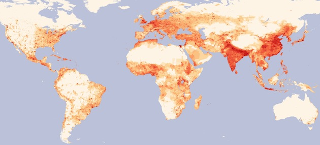
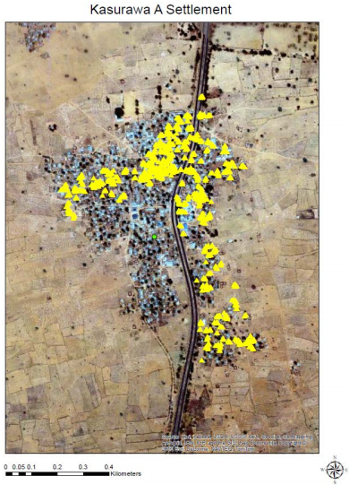

02.23.13
Posted in Uncategorized at 1:34 pm by danvk
According to Wikipedia, there are twelve living people born in the 1800s:
| # |
Name |
Sex |
Birth date |
Age |
Residence |
| 1 |
Jiroemon Kimura |
M |
1897 April 19 |
115y 310d |
Japan |
| 2 |
Misao Okawa |
F |
1898 March 5 |
114y 355d |
Japan |
| 3 |
Maria Redaelli-Granoli |
F |
1899 April 3 |
113y 326d |
Italy |
| 4 |
Elsie Thompson |
F |
1899 April 5 |
113y 324d |
United States |
| 5 |
Jeralean Talley |
F |
1899 May 23 |
113y 276d |
United States |
| 6 |
Susannah Jones |
F |
1899 July 6 |
113y 232d |
United States |
| 7 |
Bernice Madigan |
F |
1899 July 24 |
113y 214d |
United States |
| 8 |
Soledad Mexia |
F |
1899 August 13 |
113y 194d |
United States |
| 9 |
Evelyn Kozak |
F |
1899 August 14 |
113y 193d |
United States |
| 10 |
Mitsue Nagasaki |
F |
1899 Sept. 18 |
113y 158d |
Japan |
| 11 |
Emma Morano-Martinuzzi |
F |
1899 Nov. 29 |
113y 86d |
Italy |
| 12 |
Grace Jones |
F |
1899 Dec. 7 |
113y 78d |
United Kingdom |
These are the verified people, which means that the Gerontology Research Group has validated at least three documents mentioning their date of birth. Wikipedia lists at least 50 others whose claims do not meet this stringent standard.
So how long will it be until we can completely close the door on the 19th century? Wikipedia gives the odds of surviving your 114th and 115th years as about 30%, in which case we’d expect the last survivor to die in the next three years. On the other hand, if Grace Jones turns out to be another Jeanne Calment, then we may have to wait another ten!
Update (August 2013): this list is down to eight.
Permalink
02.22.13
Posted in Uncategorized at 7:45 am by danvk
I recently saw this map on the delightful “MapPorn” subreddit:

Please click through to the full image, it’s huge!
What I love about this map is that insights spring right out of it. A few that came to my mind:
- The old world (Asia & Europe) is still more heavily populated than the new.
- Population in the new world tends to be more clustered around cities (and roads) than in Europe or Asia.
- Population density in Russia goes much farther east than I’d realized.
- Moscow is much farther east than any other European city.
- All of Egypt’s population lives along the Nile.
- France and Spain are far more centered around their cities than Germany.
- Population density in the United States drops off sharply around the 100th meridian.
- There are no “empty” spots in India or Eastern China.
- Southwest Africa is quite empty.
- Deserts suck. So does tundra.
Do you see anything when you look at the map? The data comes from the Gridded Population of the World project.
Permalink
02.12.13
Posted in Uncategorized at 8:03 pm by danvk
I’ve followed the Global Polio Eradication Initiative for the past few years, ever since I watched The Final Inch, a short documentary which chronicles the effort.
The Initiative recently released a draft of their 2013–2018 Endgame Strategic Plan. The entire report is good reading, but I found this diagram particularly interesting:

Figure 20. GPS tracking of vaccinators, November 2012
Kasurawa A village, Sokoto state [Nigeria]. Each yellow dot represents one track collected every two minutes. Density of dots is converted into an algorithm to approximate the percentage of geographic area visited by the team. In this graph, more than 50% of the village was not visited.
In the world of disease eradication the “final inch” between near eradication and complete eradication is the hardest. If even a small area isn’t vaccinated, it can create a pocket from which the disease can spring back into a larger cluster of cases.
Going door-to-door in these villages must be hard, tedious work. I can easily imagine a vaccinator claiming that they covered the whole village when, in fact, they did not. The whole multi-billion dollar Polio eradication effort could hinge on whether villages like Kasurawa A are fully or just partially vaccinated.
The GPS trackers are a clever way of doing quality control. It’s hard to argue against concrete evidence like the picture above. In the context of disease eradication, “technology” usually means new vaccines or an improved cold chain. But IT can play a role, too.
Permalink
10.22.07
Posted in Uncategorized at 9:24 pm by danvk
A conversation at lunch today reminded me of one of my favorite trivia questions: what’s the most isolated any man has been in history? By “most isolated”, I mean that his/her instantaneous distance from the nearest other person is maximized.
Think about it for a minute or two, the answer’s below the fold.
Read the rest of this entry »
Permalink
02.02.07
Posted in Uncategorized at 10:50 pm by danvk
Go pick up your copy of Adium 1.0, the new release of the greatest IM program ever. It’s Mac-only and it’s beautiful. I’ve been using it with only one complaint for at least 4-5 years (yes, it’s been in beta that long). That one annoyance was non-functioning AIM file transfers, which they claim to have fixed. We’ll see, they’ve claimed that before. Here’s what it looks like:

I’m using the “Concise” layout with the “Decay 2.0″ color scheme. I enlarged the font from 9->10 pt, reduced the spacing to 3px, and added a 6px gutter on the left. I think it looks good, very compact and understated, but quite clear and useable.
Update: Despite looking great, file transfer is still AWOL. Shoot.
Permalink
« Previous Page — « Previous entries
Next entries » — Next Page »
{kind=link}